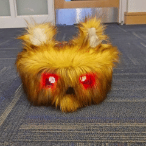
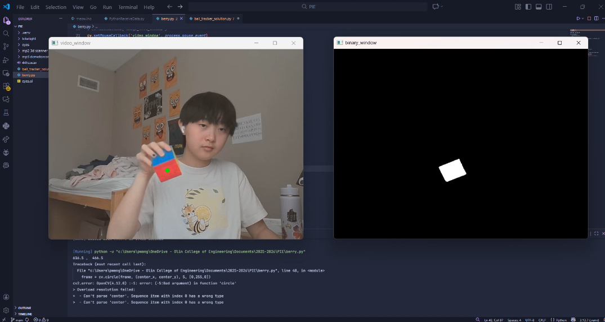
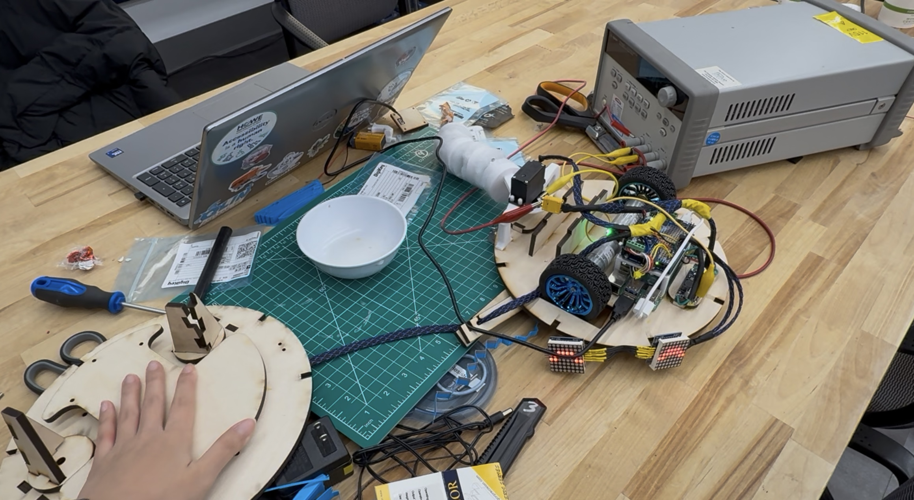

We are a group of sophomore engineers from Olin College of Engineering. This project was part of our Principles of Integrated Engineering course (PIE). Our objective was to make a cute, interactive, and advanced robot that would act as the dorm pet we are all forbidden. This website is designed to be showcase and document all of our work through the course of the semester on the foxbot.
Cute
Inspired by the cat cakes from Honkai: Star Rail, we decided to make a fun and whimsical fox cake.
Interactive
In order to make the robot feel like a real pet, we wanted to be able to interact with it in ways such as petting it or playing music, and have it respond.
Advanced
We wanted to create an integrated system with mechanical, electrical, and software components.
Foxbot Demonstration
Pictures and videos of our robot behaviors.

Default
Eyes and ears neutral, no movement
Chase tail
Tail to the right and spin to the right, eyes get dizzy, blink
The electrical system of the Fox-Bot was designed to be both functional and clean. The electrical system needs to facilitate all necessary software tasks and power all of the systems while not interfering with the cute looks of the bot. It should also be well organized and easy to follow for debugging.
All external interaction with the robot was to occur via audio which we pivoted on later in the project.
Initial Design Choices
Going into the team set the following electrical goals:
Clean and tidy
Integrated with the mechanical system from the start
Contained (does not interfere with cuteness)
Sufficiently powerful to power all components without dropouts
Powerful enough to run machine learning
The first big choices on the table were how to do computing, how to control motors and servos, and how to power the system.
Computing Demands
Running both machine learning processes and audio processing at once requires a lot of computing power and powerful software available. Many Single Board Computers (SBCs) exist on the market but many are either overpriced or underperforming for our budget and needs. To compare our options we made the following decision matrix:
Criteria
Weight (%)
Raspberry Pi 5
NVIDIA Jetson
Raspberry Pi 4
Orange Pi 5
Cost
20
7
4
8
4
Performance
20
8
10
4
10
Support
5
6
6
6
3
Community
15
10
8
10
6
Size
5
10
5
10
8
Power Draw
15
7
4
7
6
Ease of Use
20
8
7
8
7
Final Score
100
7.95
6.55
7.35
6.55
Note: The Arduino Uno Q would have been an absolutely perfect option but it would not have arrived in time.
Motor/Servo Control
The Raspberry Pi 5 cannot directly control and power servos or motors, so we needed an intermediate to facilitate this control. In earlier PIE projects, we learned how to use Arduinos and Adafruit Motor Shields, and since fancy motor control was not in the scope of the project or in our learning goals, we opted to continue with this method of control. PIE also has a spare motor shield we could borrow which made it an easy choice, given that our team also had multiple Arduino R4s at our disposal (foreshadowing).
System Power
All the components we selected have to now be powered. All together, the max power draw of the system is as follows:
Raspberry Pi 5 = 15W (3A @ 5V)
Arduino Uno R4 Minima = 0.5W (90mA @ 5V)
Three Servos = 3W (600mA @ 5V)
Two 8x8 Matrix Displays = 3W (600mA @ 5V)
Two 12V Drive Motors = 72W (6A @ 12V)
Total 5V = 4.29A Needs to be stepped down from 12v Total 12V = 2.4A Including 12V converter theoretical draw
We had a 12V battery easily at our disposal from PIE stock. It was a 12V 2.2AH Li-Po battery that has seen better days (foreshadowing #2). Also, we needed a 12V system anyway to power the motors.
We found buck converters in the electrical stock room that could only supply 3A max, meaning that at full draw our robot would be power limited. Also, the Raspberry Pi 5 is incredibly sensitive to power fluctuations (foreshadowing #3) so having a dedicated buck converter makes the system more reliable and cleaner. So we ended up with a 12V battery and 2 buck converters to power the entire robot.
Initial Work/Integration
With all of our components selected, we could start working! Our original expectation was to use three microphones for all of the software functions. To test this, we connected three microphones to the ADC port on an Arduino and transmitted the audio data over WiFi to test botha audio collection and remote data transmission. We were only able to send low fidelity audio which did not meet software’s requirements for tracking a person or melody. Relatively late into the project we switched to a camera, which we will discuss more later.
Just as we were figuring out audio, our Raspberry Pi 5 finally arrived. We purchased the Pi 5 due to its reliability, community, and generally available knowledge on the internet. However, we managed to discover many of the possible downfalls of the Raspberry Pi 5, all in succession.
After flashing a 64 bit version of Debian Trixie, the Raspberry Pi would start to boot, get caught, and start to boot again endlesssly. It gave no error code, would not connect to the internet so we could SSH into it and check errors, or give really any consistent signal as to the problem. We eventually identified a weak power supply, wires that were too thin, a slow SD card, and funky network protocols to all be interfering with the boot process.
After soldering thicker wires to the GPIO pins, setting a static IP and connecting to OLIN-DEVICES, finding a faster SD card, and changing power supplies, the Raspberry Pi booted! This was absolutely huge for our team and happened after over ten hours of fiddling with a supposedly plug and play product. Note: we did not have the Raspberry Pi official power supply which would have solved some isses.
Powering the System
With our base systems set up with the Arduino data communication and Raspberry Pi up and running, we started to integrate the electrical system. We were able to find two buck converters in the electrical stock room that perfectly fit our power requirements and dimensions.
Within a couple days we had a fully wired, albeit messy, system for testing. Our battery was happily powering our buck converters and the Arduinos and motors.
Then one of our GPIO pins on one Arduino shorted and produced magic smoke, and a 12V wire became quite friendly with the USB port on the other Arduino… leaving us with one final Arduino for the project.
Besides this, the two buck converter system kept the Raspberry Pi happy while providing enough power to the servos and displays.
Wire Management
It was incredibly important to our electrical team member that the system be quite neat. So after we had a working prototype, it was time to refine the wiring. Before refinement the wiring was quite a rat’s next: It all worked, but some wires were too short, some were too long, and it all made working on the robot really hard.
To fix this issue we unsoldered all of the wires and made all of them the correct length, as well as switching to silicone sleeved wire instead of PVC for ease of routing. We then added wire wrap and heat shrink to all necessary connections and routed the wires for minimal length on power wires.
Here is what the final electrical system looks like with all of the wire management.
Firmware Development
Firmware also fell under the electrical umbrella. Please see the firmware page on the website for details on the development.
The Li-Po Fiasco
The battery powering our dear furry friend was a 12V Li-Po battery that was in PIE stock. We found it with a small amount bulge but it was within safe levels. This battery served us for a couple weeks before we left the robot plugged in all night. This completely drained the battery. In the morning we charged the battery again, causing it to inflate a great deal more to highly unsafe levels (enough that the entire PIE teaching team was concerned). We unfortunately had to dispose of our trusty battery with the shop.
The PIE team offered to buy our team a new battery, since safety comes above budget, so huge shout out to all of them. Thank you for making our project possible. But for a while, we were relegated to power supply testing for our software/hardware integration.
Mechanical
Our design process laid bare
Mechanical Overview
The main goals for the mechanical design of the Fox-Bot were to be easy to take apart and put back together, and to be visually fox-like and cute. To achieve the first goal we made a modular skeleton out of lasercut plywood. All joints are pressfit or secured with bolts, to ease disassembly and access to the inside electronics. Plywood was also chosen to be cost effective and sustainable. To achieve the second goal we built moving ears and tail, hid the camera in the nose, and covered the entire Fox-Bot in faux-fur. We’ve broken our design process into six main aspects which we’ll cover here.
Chassis
The chassis is designed to be easily taken apart in order to access the interior workings. The Fox-Bot is driven by two 12V DC motors mounted on the baseplate, with two castor wheels on the front and back. We originally were going to design and manufacture our own caster wheels, but decided against it because of how much time it would take. The caster wheels are embedded higher into the baseplate in order to match the height of the main wheels. We also had to sand the motor mounts a bit to reach the desired height. The design of the lasercut chassis stayed mostly the same throughout our design process, and we were able to add attachment points where necessary.
Face
The design of the face had to include mounting for the 2 displays we used for eyes, and eventually a mount for the camera. In continuing the goal of ease of assembly, the eyes are simply pressfit into holes cut into plywood. Once we pivoted to using a camera, the camera mount was added into the center of the face, and disguised as a nose/snout.
Electrical Management
The management of the electrical component was played around with near the beginning of the project as a unified platform to house the arduino, motorshield and battery, but we quickly realized that would not work because the DC motors for the wheels cut right through the center of the body. This led to a two platform design, with a simple plywood housing for the battery on one side of the Fox-Bot and a simple 3D printed platform on the other.
Two screws are tightened up through the baseplate and holes in the raspi to screw into the poles of the PCB platform. The Arduino is then secured with a separate set of bolts into the platform. This set up had the added benefit of balancing the chassis.
We also implemented wiring notches in the top and bottom the chassis supports to help with the internal wire management of the Fox-Bot
Ears
The ears were designed to be rotated above the head by two servo motors, and be simple enough to cover in fur. A structure to support the servos is press fit into the top. We used small servos provided by our class because they were free and we didn’t need much tourque to move the ears, but were more constarined by space.
Button
The goal of the button is to allow the user to directly interact with the Fox-Bot. It was designed with ease of activation and ease of integration in mind. Electrically the Fox-Bot was already doing a lot, so that is why there is not a pressure sensor or some other sensor to detect someone petting the head of the Fox-Bot. The solution is two buttons.
Above is the CAD rendering of the top plate and large button (both laser cut plywood) and the real life implementation. The small blue button is a real electrical component, but doesn’t meet the requirement that a user can pet anywhere on the top of the Fox-Bot and queue a response. We chose to use this component because we found it for free within our classroom’s excess materials. The large and the top plate that have suspended dowels running through both, and springs around those dowels. This guides the button directly down when it is pressed and keeps it from moving on the XY plane. The springs wood glued directly to the button and top plate keep the large button from dislodging. Whenever the large button is pressed, even slightly, it will apply pressure to the small button and queue the Fox-Bot to respond.
This design makes integration easier and relies on a very simple and robust electric component, versus a potentially finickier sensor.
Tail
The tail of the Fox-Bot is and was 3D printed from PLA. This manufacturing process was chosen for its affordability, and because it was easy to prototype. The tail went through two major phases. The first one was an attempt to install a cable drive system that would use a gear to simultaneously move the tail and curl the tail. These were the first iterations of the tail with that design in mind (note the holes in the sides of each component).
This idea was quickly abandoned as too complicated for such a small subsystem, and would require springs to be integrated into the cable system to keep it taut. We opted for a simpler modular design that would curl slightly when swung back and forth via the momentum of the tail. The components were also made cylindrical, and filling was added to remove the clanking noise created when the PLA collided with itself as the tail swung. This significantly reduced the tails ability to curl, but considering the size of the fur that would later cover it this trade off was worth it.
The motor supports (which just press fit into the Fox-Bot for even more modularity) for the servo remained relatively the same through the two phases, although the whole platform was raised to reduce the dragging created with the ground.
Aesthetics:
“Yap about fur”
The other purely aesthetic part we created was a 3D rendition of the Minecraft Sweet Berry.
We made it out of plywood and painted it. The color of the berries is a brighter and more consistent red than that of the actual videogame artifact, but that decision was made with the computer vision in mind. One, brighter red color makes tracking easier.
Software
Software design process and justification
Initial goals:
System-level integration of input and output devices, including motors, servos, LED displays, and microphones
Cute and in-character behavior
Idle states that run when no interaction is happening
Recognition and response to the breastling melody from Silksong
Ability to follow a treat (a Minecraft berry prop made of painted plywood)
Response to darkness
We chose to use Python because of its ease of use and many libraries, except for a C++ script that sends data to arduino that controls all the hardwares.
Code Structure and Design:
Behaviors
The core module that controls the robot is the behaviors class, which:
Keeps track of and updates robot behaviors
Sets the values of motor speed, ear and tail servo positions, and eye display matrices
Converts these values to bytes and return a packet with expected format by the Arduino
In a seperate EyeDisplay class, we define the eye of 8*8 pixels with a list of 0s and 1s and imports it here.
We began with some basic idle functions like sleep() and chase_tail() that sets these parameters to a certain value or state according to time and phase of the behavior. For example, in chase_tail(), its tail would first move to one side, then it spin at its tail’s direction, and finally it gets dizzy eyes.
At early stage, since the hardwares are not in place yet, we tested our code on a simulation script that prints out all robot parameters and the raw bytes it was sending out, so that we could test and debug our code as we were writing it, which prevents the risks of large-scale code reconstruction or underlying logic bugs that couldn’t have been found without running.
In fact, this helped a lot with our integration. Our script almost worked instantly when we first tested it on hardwares despite some arduino reading issues that are easy to fix.
Behavior Manager
As we started to add more idle states, more complex behaviors, and behaviors that only triggers with certain input signals, we realized that one class that controls both the behavior actions and robot states can be really long and messy. To make our code more readable and extendable, we split it into two classes: Behaviors and BehaviorManager.
BehaviorManager, as its name suggests, manages robot states and behavior signals based on inputs such as button press(petted), melody detection and darkness. It also handles prioritization of behaviors, idle behavior loop and time tracking.
The Behavior class receives a string that indicates the state that the robot should currently be in, and update robot parameters accordingly.
def update_behavior(self):
self.state = self.manager.state
match self.state:
case “run_petted”:
self.behavior = lambda:self.petted(self.manager.eye_state)
case “run_look_for_treat”:
elapsed = self.manager.now - self.manager.look_for_treat_start
self.behavior = lambda:self.look_for_treat(elapsed)
case “run_sleep”:
self.behavior = self.sleep
case “blink”:
elapsed = self.manager.now - self.manager.idle_start
self.behavior = lambda: self.blink(elapsed)
case “chase_tail”:
elapsed = self.manager.now - self.manager.idle_start
self.behavior = lambda:self.chase_tail(elapsed)
case “wag_tail”:
self.behavior = self.wag_tail
case “look_around”:
elapsed = self.manager.now - self.manager.idle_start
self.behavior = lambda: self.look_around(elapsed)
case _:
self.behavior = self.default
Audio Processing
There are three main tasks for audio processing:
Detect the pitch of notes in the audio
Real-time audio collection and processing
(Stretch Goal) Recognize the words or identify the speaker.
Pitch finder
We used librosa library for finding the frequency and pitch of notes in the audio. It worked pretty well on saved .wav audio files, so we decided that our main task is getting it to run on real-time collected audio data.
Real-time audio
One challenge of real-time audio processing is that while collecting data is fast and easy, processing it and detecting notes takes longer and will cause a noticible pause of robot. To address this, we continuously streams sound from the microphone and store small chunks of audio in memory, which doesn’t affect the normal robot operation. Every few seconds, we save the recorded audio to a temporary file, process it and analyze the frequencies, and save the notes detected. Then we can comparing the notes to the given melody and send that signal to other modules.
Word & Speaker recognition
Our stretch goal was to make the robot react to specific word commands, such as “spin” or “come here”, as well as train a model for audio data on different people’s voices. We explored on both of them but didn’t end up applying it to the robot.
Speech recognition: we already got it to work on our computer with calling Google speech recognizer API and it was able to run in the background without interfering the robot behaviors (see word_detection.py in our archive). However, when running it on Rasberry Pi, it turned out that the API requires exclusive microphone access, so we couldn’t run it along with the melody detection script. We decided to keep our MVP goal and discarded this function.
Speaker Identification: we did research on current machine learning algorithms for sound feature detection and recognition and found some simple ones that could be used. However, considering the difficulty to collect and label enough data, uncertainty of the training result on the microphone audio, and time restrictions, we didn’t end up implementing it.
Object Detection
We wanted the robot to come to us when it hears the specific melody. Our initial thought was to use three microphones on the side of the robot, convert the amplitude of each microphone’s reading to distance, and calculate the position of the sound source based on the distances. However, the microphone quality was worse than we expected and the difference between the three microphones are not significant enough for accurate math calculation.
To address that, we decided to instead use a camera so that the robot can see what’s around it and follow a targeted thing – in our case, a red berry. We used OpenCV to detect the color and when it sees a block of red it returns the position of its center. The robot will then move to it.

Fine tune and test
At final stage, when all the hardwares were assembled, we tested the code on the robot and fine tuned the parameters. For example, the tail servo cannot move to its theoretically biggest angle because it would hit the mounting, and the motor speed for wiggling also needed to be adjusted carefully so that it didn’t just go straight or turn to one side.

System Diagram/Descriptions
Diagrams/descriptions of multiple high and low level systems.
Detailed Mechanical Overview
A mechanical diagram of the Fox-Bot broken down by subsystem.
A graphic model of the data and energy flow inside the robot.
Firmware Description
A firmware description of the Fox-Bot.
Full System Diagram
A full system diagram of the Fox-Bot.
Software Diagram
A software diagram of the Fox-Bot.
Detailed Mechanical Overview
A mechanical diagram of the Fox-Bot.
Final Mechanical Overview
Below is a full and then subsystem level illustration and discription of the mechanical side of the Fox-Bot. We chose Onshape as the CAD software to design in because of its colaboration feature. If you are looking for more details, or wish to recreate some or all of our Fox-bot, here is the link to view our Onshape document*. Most real life images are in the mechanical design process page.
This is a full CAD rendering of the Fox-Bot. The whole design is modular and almost all joints are either press fits or bolts. Only the castor wheels, the depth of which needed to exactly match the motorized wheels, are wood glued.
Chassis
CAD rendering and drawings of the chassis. All of these parts are \frac{1}{4}’’ plywood and machined with a laser cutter.
Electrical Management
CAD rendering and drawings of the battery container and PCB housing. The battery container is \frac{1}{4}’’ plywood machined with a laser cutter. The PCB Housing was 3D printed from PLA.
Face
CAD rendering and drawings of the eye display mounts, nose, and camera mount. All drawn parts are \frac{1}{4}’’ plywood machined with a laser cutter. Included in the CAD rendering are CAD aproximations of the eye displays and camera and its board
Ears
CAD rendering and drawings of the ear scafolding, ear motor mounts, and ear motor horn. All drawn parts are \frac{1}{4}’’ plywood machined with a laser cutter. Included in the CAD rendering are CAD aproximations of the small servos used to power the ears
Tail
CAD rendering and drawings of the tail pieces, tail horn, and tail servo mounts. All drawn parts were printed with PLA. Included in the CAD rendering are CAD aproximations of the servo used to power the tail. The live image shows the final integrated tail.
Asthetics
Images of the 4 main peices of fur that cover the body, ears, and tail of the Fox-Bot, CAD for the Minecraft Sweet Berry, and a physical rendition of the sweet berry made of stacked layers of wood glued \frac{1}{4}’’ plywood machined with a laser cutter. This Prop is what the camera tracked after the Beastling Call melody is recognized by the microphone (built into the board the camera is on).
Bill of Materials
A full list of parts and costs for the Fox-Bot.
| Part | Quantity | Price | Link |
| —————————— | ——– | —— | —————————————————————————————————————————————————————————————————————————————————————————————————————————————————————————————————————————————————————————————————————————————————————————————————— |
| DC12V Encoder Gear Motor | 2 | $19.00 | Amazon Link |
| Electret Microphone (x3) | 1 | $6.99 | Amazon Link |
| 8x8 Matrix Display (x3) | 1 | $6.99 | Amazon Link |
| 100 1/4 in Chrome Plated Balls | 1 | $6.56 | Amazon Link |
| Raspi 5 | 1 | $66.00 | Adafruit Link |
| Box of springs | 1 | $6.36 | Amazon Link |
| 8 Adhesive Castor Wheels | 1 | $5.32 | Amazon Link |
| Faux fur | 1 | $53.61 | Amazon Link |
| Camera/Microphone | 1 | $54.90 | DF Robot Link |
| 1/4 in plywood | 2 | $6.00 | Shop Stock |
| 12v to 5v 3A buck converter | 2 | $10.00 | Found |
| XT60 Connectors | 1 | $0.66 | Found |
| 20 AWG Wire | 3ft | $1.73 | Found |
| 24 AWG Wire | 2ft | $0.70 | Found |
| Button | 1 | $5.00 | Found |
| Shrink Wrap | N/A | $0.24 | Found |
| Shrink Wrap | N/A | $0.24 |
Found
Circuit Diagram
A circuit diagram of the Fox-Bot and electrical components list.
Notes:
The buck converters depicted in the circuit diagram were acquired from the electrical stock room in fully populated PCB form. A full schematic was not available so ours is an approximation.
No Motor Shield symbol was available so the diagram compensates with net labels.
Electrical Components List:
2x Variable Buck 3A Buck Converter
2x LED Matrix Display
2x 12V 130 RPM DC Motors
2x Small Servo (ears)
1x Large Servo (tail)
1x 12V 2ah Li-Po Battery
1x Raspberry Pi 5
1x Arduino R4 Minima
1x XT60 Connector
1x USB-A to USB-C Cable
Energy and Data Flow
A graphic model of the data and energy flow inside the robot.
This diagram shows the energy and data flow throughout the Fox-Bot robot. It is oriented in a birds eye view with the tail towards the top and eyes towards the bottom.
Firmware Description
A firmware description of the Fox-Bot.
Firmware Design Requirements
Our system uses an Arduino R4 Minima to facilitate actuation of servos, motors, and receiving signals. The Arduino recieves all of its instructions on how to actuate those devices via a serial message from the Raspberry Pi 5. Since we need the robot to react in real time with the user the firmare needs to be efficient and loop quickly. The firmware also needs to do very minimal calculation as most of the grunt work is done by the much more powerful Raspberry Pi 5.
Logic Walk-Through
Since everything the Arduino does is based on the data it receives, the main loop starts with reading and unpacking a serial message.
// ----------------------------------------------------------// Serial Data format:// Byte 0 = Left motor speed -128-127(byte)// Byte 1 = Right motor speed -128-127(byte)// Byte 2 = Servo angle for ears 0-180(byte)// Byte 3 = Servo angle for the tail 0-180(byte)// Byte 4 = Eye brightness (0-1 -> scaled to 0-255)// Bytes 5-12 = Array for left eye (8 bytes)// Bytes 13-20 = Array for right eye (8 bytes)// ----------------------------------------------------------if(Serial.readBytes(buffer,SERIAL_PACKET_SIZE)==SERIAL_PACKET_SIZE){// Unpack message dataintreceivedLeftSpeed=(int)buffer[0];intreceivedRightSpeed=(int)buffer[1];intleftSpeed=(receivedLeftSpeed-128)*2;// Convert unsigned 0-255 to signed -255-255intrightSpeed=(receivedRightSpeed-128)*2;// Convert unsigned 0-255 to signed -255-255intreceivedEar=(int)buffer[2];intreceivedTail=(int)buffer[3];intreceivedBrightness=(int)buffer[4];
These datapoints are then used as the input of various functions to change the state of the robot.
for(inti=0;i<8;i++){// Unpack array for left eye matrixleftArray[i]=buffer[5+i];}for(inti=0;i<8;i++){// Unpack array for right eye matrixrightArray[i]=buffer[13+i];}setDisplays(receivedBrightness,leftArray,rightArray);// Set displays based on arrays unpacked abovesetMotors(leftSpeed,rightSpeed);// Set motors to speeds unpacked aboveif(l_receivedEar!=receivedEar){// Set ear anglessetEars(receivedEar);}if(l_receivedTail!=receivedTail){// Set tail anglesetTail(receivedTail);}
The serial communicaton and function calls make up the entire loop. This simple loop accomplishes our goals of simplicity and speed. This loop is able to run fast enough to react in real time (impercetable to our eyes) to the Raspberry Pi’s inputs even while changing motor, servo, and display states.
A huge part of the speed of the firmware is derived from non-blocking function calls. None of our functions wait for the action to be completed which greatly increases speed.
This can lead to issues of actions not reaching completion before a new state is requested. We solve this problem by reducing or increasing the message rate of the Raspberry Pi as the Arduino only acts when a serial message is available. Therefore, the loop runs only as often as the Raspberri Pi requests (up until the Arduino’s computing limit).
Dependencies
The Arduino is connected to an Adafruit v3 motor shield to allow the Arduino to control the two DC drive motors. We are also using matrix LED displays along with servos and thus we need multiple external libraries to run these complex tasks. The libraries we used are:
Note: IDE is also required to efficiently edit and flash Arduino code.
Full Firmware
#include<Adafruit_MotorShield.h>
#include<Servo.h>
#include<LedControl.h>// All pin defsconstintDIN_PIN=12;// Data In (MOSI) -> Connect to DIN on the first display (orange wire)constintCLK_PIN=7;// Clock -> Connect to CLK on the first display (green wire)constintCS_PIN=8;// Load/Chip Select (CS) -> Connect to CS on the first display (yellow wire)constintENCODER_PIN_R=2;// Encoder for right motor (must be 2 or 3 for ISR)constintENCODER_PIN_L=3;// Encoder for left motor (must be 2 or 3 for ISR)constintSERVO_EAR_R=10;// Right ear servoconstintSERVO_EAR_L=9;// Left ear servoconstintSERVO_TAIL=6;// Tail servoconstintNUM_DEVICES=2;// Number of displays daisy-chained togetherbyteSERIAL_PACKET_SIZE=21;// Serial Comm Constants// Motor shield setupAdafruit_MotorShieldMS1=Adafruit_MotorShield();// Motor shield (0x60 address)// Attach motorsAdafruit_DCMotor*m1=MS1.getMotor(4);// Left Drive MotorAdafruit_DCMotor*m2=MS1.getMotor(3);// Right Drive Motor// Servo objectsServoearR_servo;ServoearL_servo;Servotail_servo;// Set up LED controllerLedControllc=LedControl(DIN_PIN,CLK_PIN,CS_PIN,NUM_DEVICES);intreceivedLeftSpeed=0;intreceivedRightSpeed=0;intreceivedEar=90;intreceivedTail=90;intreceivedBrightness=5;intl_receivedLeftSpeed=0;intl_receivedRightSpeed=0;intl_receivedEar=90;intl_receivedTail=90;intl_receivedBrightness=5;byteleftArray[]={B00000000,// Row 0B00000000,// Row 1B00000000,// Row 2B00000000,// Row 3B00000000,// Row 4B00000000,// Row 5B00000000,// Row 6B00000000// Row 7};byterightArray[]={B00000000,// Row 0B00000000,// Row 1B00000000,// Row 2B00000000,// Row 3B00000000,// Row 4B00000000,// Row 5B00000000,// Row 6B00000000// Row 7};constintPATTERN_ROWS=8;// Max number of rows in the patternvoidsetDisplays(intbrightness,byteleftArray[],byterightArray[]){lc.setIntensity(0,brightness);// Set the brightness from 0-15 lc.setIntensity(1,brightness);// Set the brightness from 0-15 for(introw=0;row<PATTERN_ROWS;row++){// Set patternslc.setRow(0,row,leftArray[row]);lc.setRow(1,row,rightArray[row]);}}voidsetMotors(intspeedL,intspeedR){// Clamps all speeds to 255if(speedL>255){speedL=255;}if(speedR<-255){speedL=-255;}if(speedR>255){speedL=255;}if(speedR<-255){speedR=-255;}// Set speed and direction of left motorif(speedL==0){m1->run(RELEASE);}elseif(speedL<0){m1->run(BACKWARD);m1->setSpeed(-speedL);}else{m1->run(FORWARD);m1->setSpeed(speedL);}// Set speed and direction of right motorif(speedR==0){m2->run(RELEASE);}elseif(speedR<0){m2->run(BACKWARD);m2->setSpeed(-speedR);}else{m2->run(FORWARD);m2->setSpeed(speedR);}}voidsetEars(byteear_angle){// Set ears angleearR_servo.write(ear_angle);earL_servo.write(ear_angle);}voidsetTail(bytetail_angle){// Set tail angletail_servo.write(tail_angle);}voidsetup(){MS1.begin();//------------------------------------------------------------------------------------------------// The arduino code needs to receive a 21 byte array message to run // 21 bytes = 168 bits// The robot should have a refresh rate of around 200-500 times a second for seameless operation // Realistically 60hz or so would probably be fine but where is the fun in that// 168*500 = 84,000 which means 9600 is too slow so we need 115200 bps or faster//------------------------------------------------------------------------------------------------Serial.begin(115200);// Bitrate justified abovedelay(100);// Give time for Raspi to connect// Attach all necessary servosearR_servo.attach(SERVO_EAR_R);earL_servo.attach(SERVO_EAR_L);tail_servo.attach(SERVO_TAIL);lc.shutdown(0,false);// Wake up display 1lc.setIntensity(0,1);// Set the brightness from 0-15 lc.clearDisplay(0);// Clear display 1lc.shutdown(1,false);// Wake up the display 2lc.setIntensity(1,1);// Set the brightness from 0-15 lc.clearDisplay(1);// Clear display 2}voidloop(){if(Serial.available()>=SERIAL_PACKET_SIZE){bytebuffer[SERIAL_PACKET_SIZE];// ----------------------------------------------------------// Serial Data format:// Byte 0 = Left motor speed -128-127(byte)// Byte 1 = Right motor speed -128-127(byte)// Byte 2 = Servo angle for ears 0-180(byte)// Byte 3 = Servo angle for the tail 0-180(byte)// Byte 4 = Eye brightness (0-1 -> scaled to 0-255)// Bytes 5-12 = Array for left eye (8 bytes)// Bytes 13-20 = Array for right eye (8 bytes)// ----------------------------------------------------------if(Serial.readBytes(buffer,SERIAL_PACKET_SIZE)==SERIAL_PACKET_SIZE){// Unpack message dataintreceivedLeftSpeed=(int)buffer[0];intreceivedRightSpeed=(int)buffer[1];intleftSpeed=(receivedLeftSpeed-128)*2;// Convert unsigned 0-255 to signed -255-255intrightSpeed=(receivedRightSpeed-128)*2;// Convert unsigned 0-255 to signed -255-255intreceivedEar=(int)buffer[2];intreceivedTail=(int)buffer[3];intreceivedBrightness=(int)buffer[4];for(inti=0;i<8;i++){// Unpack array for left eyeleftArray[i]=buffer[5+i];}for(inti=0;i<8;i++){// Unpack array for right eyerightArray[i]=buffer[13+i];}setDisplays(receivedBrightness,leftArray,rightArray);// Set displays based on arrays unpacked abovesetMotors(leftSpeed,rightSpeed);// Set motors to speeds unpacked aboveif(l_receivedEar!=receivedEar){// Set ear anglessetEars(receivedEar);}if(l_receivedTail!=receivedTail){// Set tail anglesetTail(receivedTail);}}}}
Full System Diagram
A full system diagram of the Fox-Bot.
Software Diagram
A software diagram of the Fox-Bot.
This is a diagram of the structure of the code at a high level, showing the most important classes and functions and how they connect.
The Fox-Bot Team
The team was split up into three sub-teams: electrical, mechanical, and software. All members contributed to integration.